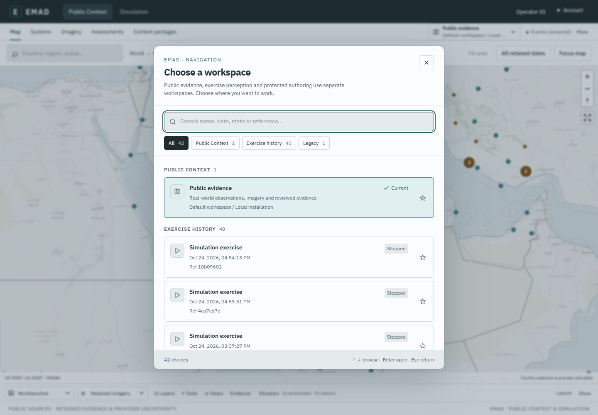

A catalog you can actually browse
The installed catalog has 42 contexts. The current workspace is clear, exercise history is bounded, and dates and states replace primary emphasis on opaque run IDs.
EMAD · implemented navigation · 25 October 2026
Workspace context, tools and record previews now have distinct controls. Search and pin useful exercises, open a workbench by purpose, and keep the map clear when the chooser closes.

The installed catalog has 42 contexts. The current workspace is clear, exercise history is bounded, and dates and states replace primary emphasis on opaque run IDs.